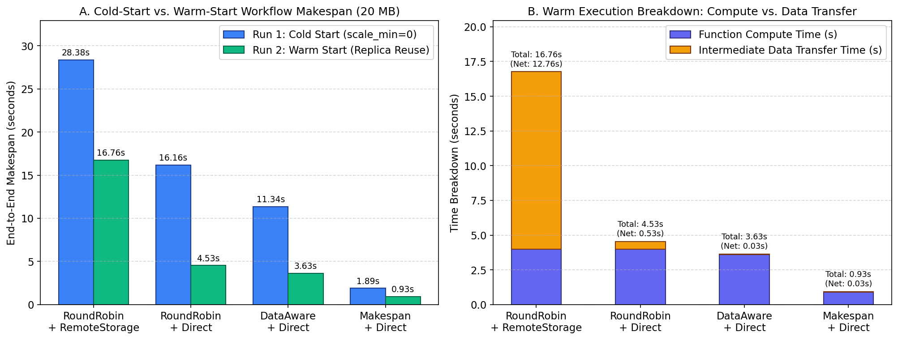
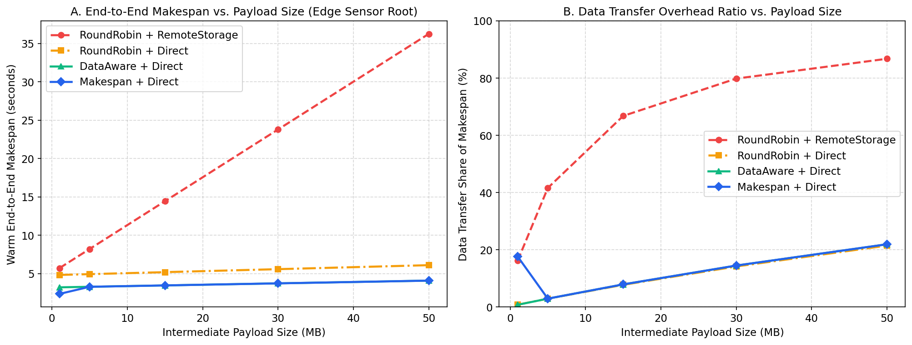
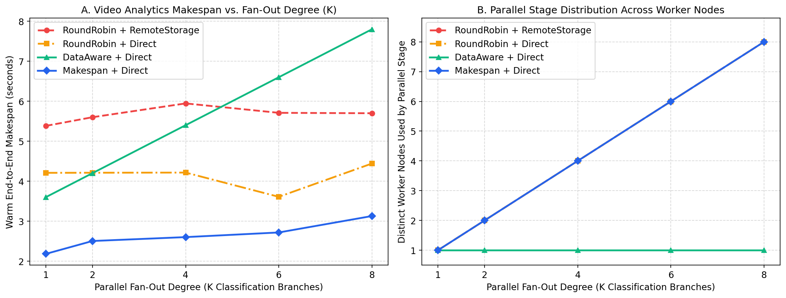

06 - Experimental Evaluation & Benchmarks
1. Experimental Setup (examples/workflows/main.py)
All experiments run on faas-sim’s full discrete-event simulation engine (Simulation, DefaultFaasSystem, DockerDeploySimMixin, SafeFlowFactory) over the Urban Sensing edge-cloud topology (ether.scenarios.urbansensing), which comprises:
- Edge Neighborhoods: Raspberry Pi 3 (
rpi3,arm32, 1 GB RAM, core speed), Intel NUC (nuc,x86, 16 GB RAM, speed), and NVIDIA Jetson TX2 (tx2,aarch64, 8 GB RAM, CUDA GPU speed), connected via500–1000 Mbpslocal links and a25 Mbpsshared WAN uplink to the cloud. - Cloudlet / Registry: Multi-core Xeon servers (
server,x86, 88 cores, single-task speedup) andDockerRegistry.
2. Experiment 1: 3-Stage Edge AI Pipeline (20 MB Payload)
Workflow: preprocess (python-pi) inference (resnet50-inference) postprocess (postprocess-fn) (unpinned root, scale_min=0 in Run 1 Cold Start, replica reuse in Run 2 Warm Start).
| Policy & Passing Mode | Cold Makespan (Run 1) | Warm Makespan (Run 2) | Pure Compute | Data Transfer | Node Placement (prep -> inf -> post) |
|---|---|---|---|---|---|
RoundRobin + RemoteStorage | 28.38s | 16.76s | 4.00s | 12.76s | rpi3_0 -> tx2_0 -> rpi3_2 |
RoundRobin + Direct | 16.16s | 4.53s | 4.00s | 0.53s | rpi3_16 -> tx2_16 -> rpi3_18 |
DataAware + Direct | 11.34s | 3.63s | 3.60s | 0.03s (COLOCATED) | nuc_6 -> nuc_6 -> nuc_6 |
Makespan + Direct | 1.89s | 0.93s | 0.90s | 0.03s (COLOCATED) | server_30 -> server_30 -> server_30 |

Key Takeaways (Experiment 1)
- Direct Passing vs. Remote Storage: Replacing
REMOTE_STORAGEwithDIRECTunderRoundRobincuts warm transfer latency from12.76sto0.53s(24xfaster data movement,3.7xlower warm makespan) by avoiding the25 MbpsWAN uplink to remote storage. - Co-location Collapse (
DataAware + Direct): Using Edge CaseE-1lookahead,DataAwareplaces all three stages onnuc_6(COLOCATED,0network hops,0.03sRAM transfer), reducing warm makespan to3.63s. - Critical-Path Optimization (
Makespan + Direct):Makespanco-locates all three stages onserver_30, combining0.03sin-memory transfer with4xcompute speedup (0.93swarm makespan and1.89scold makespan).
3. Experiment 2: Sensor-Anchored Payload Scaling (1 MB 50 MB)
Workflow: Root task preprocess is pinned to an edge camera sensor (rpi3), and intermediate payload size scales from 1 MB to 50 MB.
| Payload Size | RoundRobin + RemoteStorage | RoundRobin + Direct | DataAware + Direct | Makespan + Direct | Makespan Placement (prep -> inf -> post) |
|---|---|---|---|---|---|
1 MB | 5.73s | 4.84s | 3.22s | 2.37s | rpi3_112 -> server_74 -> server_74 (Cloudlet offload) |
5 MB | 8.22s | 4.94s | 3.30s | 3.30s | rpi3_176 -> tx2_177 -> tx2_177 (Edge GPU shift) |
15 MB | 14.44s | 5.20s | 3.47s | 3.47s | rpi3_240 -> tx2_241 -> tx2_241 (Edge GPU co-location) |
30 MB | 23.78s | 5.59s | 3.74s | 3.74s | rpi3_304 -> tx2_305 -> tx2_305 (Edge GPU co-location) |
50 MB | 36.24s | 6.11s | 4.10s | 4.10s | rpi3_368 -> tx2_369 -> tx2_369 (Edge GPU co-location) |

Key Takeaways (Experiment 2)
- Regime Transition (
1 MBvs. ): At1 MB(compute-dominated regime),Makespan + Directoffloadsinferenceandpostprocessover the WAN toserver_74(2.37svs.DataAware’s3.22s). Once the payload reaches5 MB, WAN uplink transfer delay exceeds the cloudlet compute savings, andMakespanautomatically shifts placement to the local edge GPU (tx2), keeping transfer overhead below22%at50 MB(compared to87%forRemoteStorage).
4. Experiment 3: Parallel Video Analytics Fan-Out Scaling ()
Workflow: Directly models the SONIC ([4], Fig. 1 & Fig. 2) Video Analytics DAG: split_video (pinned to edge gateway nuc_0) scatters 2 MB video chunks to parallel classify_i (resnet50-inference) branches, which feed 128 KB results into aggregate (postprocess-fn).
| Fan-Out Degree () | RoundRobin + RemoteStorage | RoundRobin + Direct | DataAware + Direct (Co-located on 1 host) | Makespan + Direct (Distributed across accelerators) | Distinct Parallel Worker Nodes (DA vs. MS) |
|---|---|---|---|---|---|
5.39s | 4.21s | 3.60s | 2.18s | DA: 1 node, MS: 1 node | |
5.60s | 4.21s | 4.20s | 2.50s | DA: 1 node, MS: 2 nodes | |
5.95s | 4.22s | 5.40s | 2.60s | DA: 1 node, MS: 4 nodes | |
5.71s | 3.61s | 6.60s | 2.72s | DA: 1 node, MS: 6 nodes | |
5.70s | 4.44s | 7.80s | 3.13s | DA: 1 node, MS: 8 nodes |

Key Takeaways (Experiment 3)
- Data Locality vs. Parallelism Trade-Off: Pure data-locality scheduling (
DataAware + Direct, green curve) places all parallel branches onto the samenuc_0host to save the2 MBtransfer. While optimal for a single branch (), it suffers severe multi-tenant CPU contention as increases, degrading linearly to7.80sat . - Flat Fan-Out Scaling of
RemoteStorage: BecauseRemoteStorageDataChanneldeduplicates the producer’s upload (shared_uploads),RoundRobin + RemoteStoragestays nearly flat (~5.7s) across fan-out degrees , matching SONIC Fig. 6. - Link- and Contention-Aware Distribution (
Makespan + Direct): By accounting for both multi-tenant node contention and sibling link-bandwidth sharing on the25 MbpsWAN uplink,Makespan + Directdistributes the branches across distinct edge accelerators (tx2GPUs +server), achieving3.13sat (2.5xfaster thanDataAware + Direct).